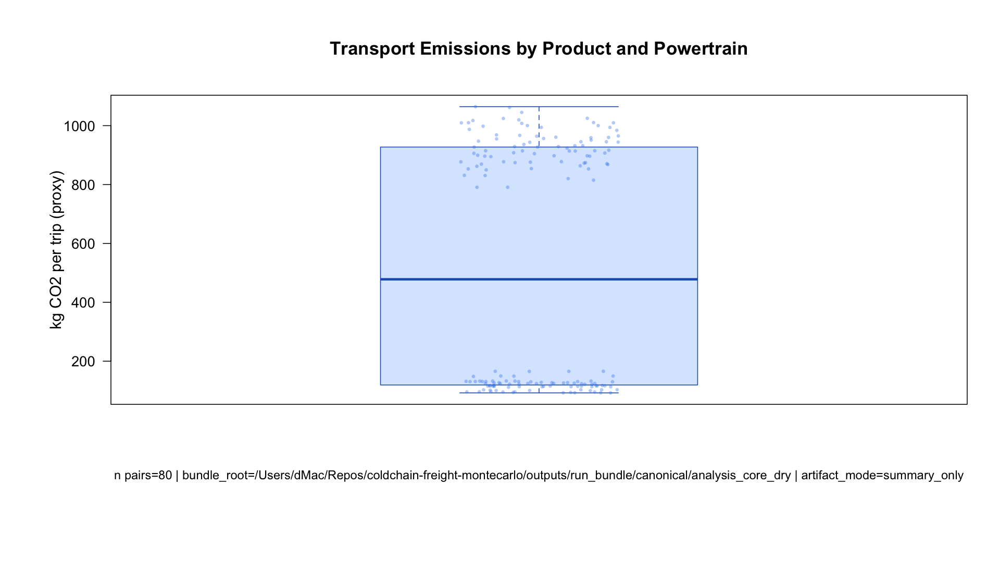
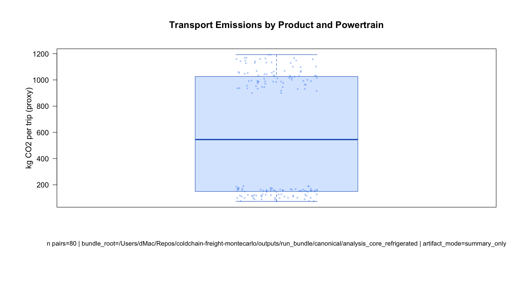
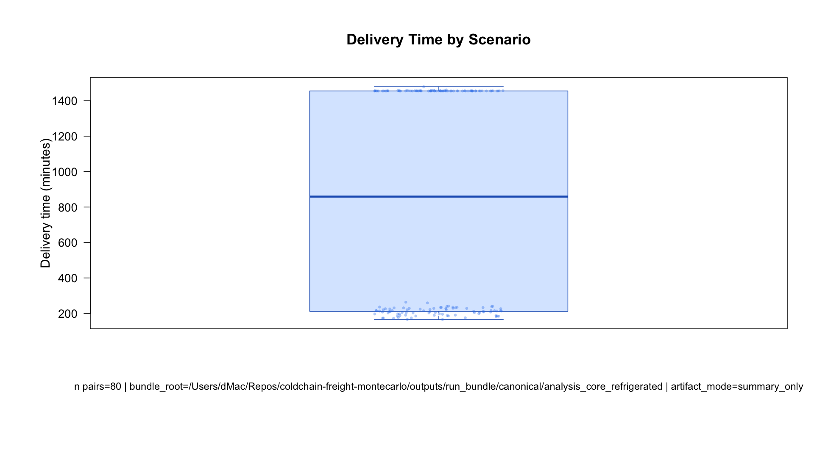
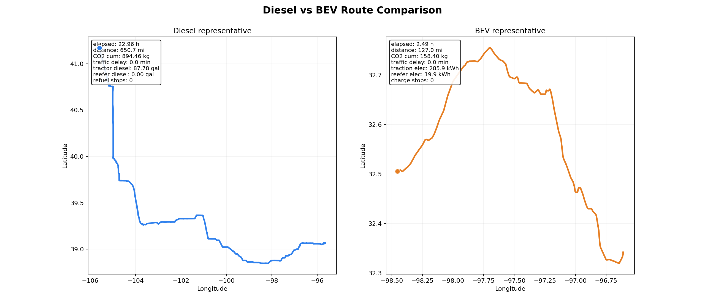

Methodology and Initial Results
Canonical Snapshot Summary
This page documents the validated canonical artifact build committed on 2026-03-08 and provides the first publishable results set.
Validation
PASS
Pair integrity, figure quality, and merged LCI files
LCI Total Rows
4160
From merged full-LCA ledger
Placeholder Rows
2240
Explicit unresolved NEEDS_SOURCE_VALUE
Snapshot Path
Git Tracked
artifacts/github_release/canonical_2026-03-08/
Methodology
- Define canonical runs in
config/canonical_run_matrix.csv. - Generate paired transport Monte Carlo bundles for dry/refrigerated families.
- Build merged LCI outputs and completeness audits.
- Build presentation artifacts and route animations.
- Validate with
tools/validate_final_artifacts.shand emit release manifest/report.
Validation Source
artifacts/github_release/canonical_2026-03-08/manifest/release_readiness_report.md
Initial Results (Core Transport Metric)
co2_per_1000kcal from canonical stochastic runs:
| Product Type | Origin Network | Traffic | CO2 per 1000 kcal |
|---|---|---|---|
| Dry | Dry factory set | Stochastic | 517.93 |
| Dry | Refrigerated factory set | Stochastic | 518.99 |
| Refrigerated | Dry factory set | Stochastic | 584.07 |
| Refrigerated | Refrigerated factory set | Stochastic | 578.91 |
Initial Figures




Artifact Links
- GitHub-ready snapshot:
artifacts/github_release/canonical_2026-03-08/ - Manifest/index/readiness:
.../manifest/ - Animations and previews:
.../animations/ - Merged LCI and completeness tables:
.../lci/
Roadmap: Animation Upgrade
Current route animations are mostly latitude/longitude playback with counters.
Next iteration should add richer map context, event overlays (charging/refuel/delay windows), and stronger scenario callouts for presentation storytelling.